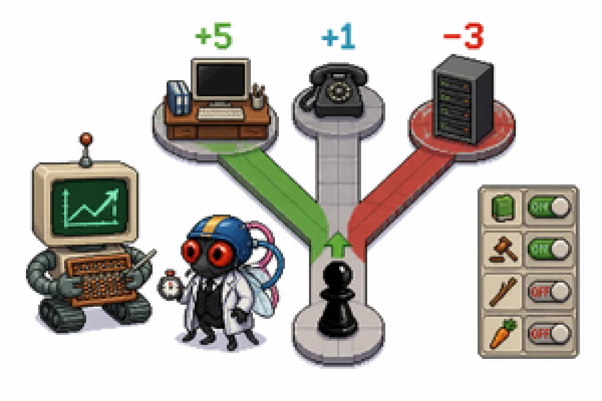

진화하는 사이버 범죄
의심했는데도 속는 이유, 그리고 범죄자의 계산법
처음 오신 분께 — 이 페이지를 3줄로
- 무엇을: AI가 범죄자의 '계산서'를 어떻게 바꿨는지 두 장면과 숫자로 본다.
- 왜 중요한가: 피해자는 몰라서 속은 게 아니다. 의심을 이길 증거가 싸졌기 때문에 속았다.
- 생활·업무에서는: 생활에서는 '요청이 온 경로가 아닌 다른 경로로 다시 확인'이 첫 번째 방패다.
코드와 수식을 몰라도 됩니다. 수식은 조수(하루)가 대신 묻고, 박사가 숫자로 한 번 풀어 드립니다.
영어 약어 풀이
- AI — Artificial Intelligence, 인공지능
- DEX — Decentralized Exchange, 탈중앙화 거래소
- ROI — Return on Investment, 투자 수익률
등장인물
 박사해설자
박사해설자 조수(하루)추적 팀 · 대응 설계
조수(하루)추적 팀 · 대응 설계 인턴1 시아추적 팀 · 현장 사례
인턴1 시아추적 팀 · 현장 사례 인턴2 모아추적 팀 · 제도·법
인턴2 모아추적 팀 · 제도·법 주판봇계산 담당
주판봇계산 담당 초파리 연구원데이터·모델 분석
초파리 연구원데이터·모델 분석 X1범죄자 대역 · 사기·사칭
X1범죄자 대역 · 사기·사칭 X2범죄자 대역 · 자동화 공격·랜섬
X2범죄자 대역 · 자동화 공격·랜섬 X3범죄자 대역 · 세탁·정보 브로커
X3범죄자 대역 · 세탁·정보 브로커왜 이 장이 필요한가

큰 그림 — 지금 어디쯤인가
이 장의 분석 도구: 범죄경제학 · 마지막 단계는 모든 장 공통의 강화학습 시뮬레이션입니다. 여기서 한 번 멈춰도 괜찮아요. 처음엔 다들 계산서 기호에서 오래 봅니다.
의심했는데도 속는 두 장면
일상: 지인 사칭·가족 목소리장면 1 — 동료 '민수'의 투자 링크
직장 동료 민수에게서 "요즘 투자 좀 잘 풀린다, 링크 하나 보낸다"는 메시지가 온다. 사칭일까 싶어 최근 나눈 대화와 회사 일을 물어본다. 답이 다 맞는다. 찜찜해서 가입만 했다. 다음 날 계좌에서 알 수 없는 인출이 시작된다.
장면 2 — 모르는 번호, 엄마의 목소리
"얘야, 사고가 났어. 경찰이랑 같이 있어. 빨리 이 통장으로…" 분명 엄마의 목소리다. 송금 직전에 엄마에게 다시 전화해 보니 무슨 일이냐고 되묻는다.
단계 대화

기술은 중립이다 — 범죄가 되려면 필요한 세 조건
방법: 세 조건 점검| 조건 | 원고의 설명 | 계산서의 변수 |
|---|---|---|
| ① 범죄 비용을 얼마나 줄이는가 | 말투·음성을 몇 분 만에 복제해 수십 명에게 동시에 접근 | c(시도 비용)↓, N(시도 수)↑ |
| ② 성공률을 얼마나 높이는가 | 감정이 담긴 진짜 같은 목소리, 행동 패턴 예측 | π(성공 확률)↑ |
| ③ 감시·통제가 얼마나 미비한가 | 기술 확산은 빠르고 규제와 방어는 늦다 | p(검거 확률)↓, f(처벌)↓ |
그리고 이 모든 조건에 연료를 대는 것이 개인정보다. AI가 '사람처럼' 말하고 들리는 것은 기술이 정교해서만이 아니라 무엇을 학습했느냐에 달려 있다. 유출된 정보, 공개된 SNS, 사진 속 위치, 댓글 습관이 모두 학습 재료가 된다.
단계 대화
AI 범죄의 여섯 가지 특징
사례: 여섯 가지 특징| 특징 | 원고 요지 | 바뀌는 변수 |
|---|---|---|
| 1. 개인정보 악용의 자동화 | SNS·사진 메타데이터·댓글 패턴을 자동 수집해 대화 습관까지 학습 | c↓, π↑ |
| 2. 은폐가 쉬운 해킹 | 정상 트래픽에 숨고 시점을 분산, 자율 AI 에이전트가 경로를 바꿈 | p↓ |
| 3. 정보 활용 방식의 진화 | 유출 정보로 목소리·얼굴·문체를 재현, 오타까지 흉내 | π↑ |
| 4. 범죄 수익의 은닉 | 크로스체인 브리지·탈중앙화 거래소·스테이블코인 | p↓, g의 확정성↑ |
| 5. 적발·단속의 어려움 | 수사기관도 합성음을 구분하기 어렵고 원본 증거 확보가 어려움 | p↓, f↓ |
| 6. 범죄 사업 모델의 소프트웨어화 | 구독형 피싱 키트, 개발·고객지원·자금관리 팀을 갖춘 기업형 조직 | c↓, 진입장벽↓ |
단계 대화
이 블로그의 분석 틀과 읽는 순서
설정: 읽는 순서원고가 약속한 세 가지 접근을 블로그에서는 이렇게 이어 간다.
- 범죄경제학 렌즈 — 모든 장에 '범죄자의 계산서'를 둔다.
- 생활유형별 맞춤 보안 — 8장에서 SNS 활동형·온라인 금융형·재택 비즈니스형 세 유형의 연간 기대손실을 계산한다.
- 사회적·윤리적 차원 — 9장에서 외부성과 집단 면역, 10장에서 회복력을 다룬다.
| 묶음 | 장 | 질문 |
|---|---|---|
| 현황과 배경 | 1~3장 | AI는 범죄를 어떻게 바꿨고, 왜 범죄자는 AI를 고르며, 딥페이크는 무엇을 무너뜨리는가 |
| 범죄 유형 | 4~7장 | 피싱·자동화 공격·감시와 프라이버시·금융 범죄는 각각 어떻게 작동하는가 |
| 대응 | 8~10장 | 개인·사회·미래는 계산서를 어떻게 뒤집는가 |
단계 대화

범죄자의 계산서 — 시도 한 번의 기대이익
방법: 기댓값 계산왜 이 방법을 쓰나
- 문제 상황
- 범죄가 왜 늘었는지 '나쁜 사람이 많아져서'로는 설명이 안 된다.
- 앞 방법의 한계
- 도덕만 보면 대응은 '조심하세요'에서 멈춘다.
- 해법
- 범죄자도 비용과 이익을 따진다고 보고, 시도 한 번의 기대이익을 숫자로 적는다.
- 쉽게 말하면
- 장사꾼이 '한 통 걸면 평균 얼마 남나'를 따지는 것과 같다.
수식을 어려워하는 조수가 대신 물어봅니다

- 학교 수학으로 보면
- 확률과 통계의 '기댓값', 그리고 일차식
| 식 조각 | 읽는 법 | 뜻 |
|---|---|---|
| π | 파이 | 시도 한 번이 성공할 확률 |
| g | 지 | 성공 한 번의 수익 |
| p | 피 | 성공했을 때 잡힐 확률 |
| f | 에프 | 잡혔을 때 처벌을 돈으로 환산한 값 |
| c | 씨 | 시도 한 번에 드는 비용 |
| π × (g − p × f) − c | 시도 한 번의 기대이익 |
- 숫자로 한 번 해 보기
- AI 사기: 0.003 × (300 − 0.03 × 3,000) − 0.03 = 0.003 × 210 − 0.03 = 0.6만 원. 하루 3,000번이면 1,800만 원이다.

AI 판단 코너 — 주판봇의 확신, 맞을까?
실험: 직접 바꿔 보기
교안의 파이썬 코드로 보면 (몰라도 됩니다)
profit = N * pi * (g - p * f) - N * c
시도 수 × 한 번의 기대이익을 계산한다.
도덕적 원칙이 아니라 제도로 — 이 장의 네 가지 손잡이
방법: 규칙 · 인센티브 · 디스인센티브 · 강제력| 요소 | 이 장의 제도 | 하는 일 |
|---|---|---|
| 규칙 | 사칭·딥보이스 사기 처벌 조항, 금융사 고령자 송금 문진 의무 | 무엇이 금지·의무인지 정한다 |
| 인센티브 | 사기 신고 포상금, 피해 예방 우수 금융사 평가 가점 | 지키는 쪽을 이익으로 만든다 |
| 디스인센티브 | 범죄수익 몰수·가중처벌 | 어기는 쪽을 손해로 만든다 |
| 강제력(집행) | 사이버수사 전담 인력·통신사 발신 추적 | 실제로 찾아내고 적용한다 |
단계 대화

X1는 무엇을 배울까 — 제도를 바꾸며 3,000번 학습
방법: 강화학습(Q-러닝, 엡실론-탐욕)왜 이 방법을 쓰나
- 문제 상황
- 앞 단계의 계산은 '한 번의 선택'이었다. 실제 행위자는 해 보고, 결과를 보고, 다음 선택을 고친다.
- 앞 방법의 한계
- 기댓값 계산은 행위자가 모든 확률을 안다고 가정한다. 현실의 행위자는 경험으로 배운다.
- 해법
- 강화학습 에이전트를 두고, 제도가 만든 보상만 주어 스스로 배우게 한다. 무엇을 배우는지 보면 제도의 효과가 보인다.
- 쉽게 말하면
- 강아지 훈련처럼, 잘하면 간식(인센티브)·잘못하면 간식 없음(디스인센티브)을 '매번 확실하게' 줄 때 행동이 바뀐다.
수식을 어려워하는 조수가 대신 물어봅니다
- 학교 수학으로 보면
- 점화식(앞 값으로 다음 값을 만드는 식), 평균
| 식 조각 | 읽는 법 | 뜻 |
|---|---|---|
| Q(행동) | 큐 | 그 행동이 평균적으로 얼마를 주는지에 대한 지금까지의 짐작 |
| r | 알 | 이번에 실제로 받은 보상 |
| α | 알파 | 새 경험을 얼마나 반영할지(여기서는 해 본 횟수 분의 1 → Q는 평균이 된다) |
| Q ← Q + α × (r − Q) | 짐작을 '실제 − 짐작'의 일부만큼 고친다 | |
| ε | 엡실론 | 가끔 일부러 다른 행동을 해 보는 비율(처음 30% → 끝 2%) |
- 숫자로 한 번 해 보기
- α는 '그 행동을 해 본 횟수 분의 1'이다. 첫 시도에 성공해 +980(=1,000−20)을 받으면 α=1이라 Q = 0 + 1 × (980 − 0) = 980. 두 번째에 실패하고 잡혀 −1,520(=−20−1,500)을 받으면 α=1/2이라 Q = 980 + ½ × (−1,520 − 980) = −270. 두 보상의 평균 (980 − 1,520) ÷ 2와 같다.
단계 대화 · AI 판단 코너

실험: 제도를 켜고 끄며 학습시키기
세 행동: 합법 부업 · 수작업 전화 사기 · AI 사칭 사기. 보상 단위는 만 원, 모든 숫자는 교육용 예시다.
교안의 파이썬 코드로 보면 (몰라도 됩니다)
n[a] += 1; Q[a] += (r - Q[a]) / n[a]
받은 보상과 짐작의 차이를 해 본 횟수로 나눠 고친다. 결과적으로 평균 보상이 된다.
X1 vs 추적 팀 — 계산서 공방
 X1의 수
X1의 수공개 영상 몇 개로 엄마 목소리를 만들어 '사고 났다'고 전화한다.
 조수(하루)의 수
조수(하루)의 수전화를 끊고 엄마 번호로 다시 건다.
추적 팀 승이에요. 확인 한 번으로 성공 확률 π가 거의 0이 됩니다.
정리 퀴즈
오늘의 연구실을 마치며

이 장의 개념 지도
| 개념 | 뜻 | 함께 보는 장 |
|---|---|---|
| 기대이익 | 확률을 곱해 평균적으로 남는 이익 | 서장 02장 10장 |
| 범죄경제학 | 범죄를 비용과 편익의 선택으로 분석하는 경제학 | 서장 02장 |
| 대화형 자동범죄 | AI가 사람처럼 대화하며 수행하는 범죄 | 01장 |
| 서비스형 범죄(CaaS) | 범죄 도구를 구독·임대로 파는 구조 | 서장 07장 |
온톨로지·서지 꾸러미
강의 자료나 지식 그래프에 옮길 때 쓰세요.
JSON-LD (schema.org)
{
"@context": "https://schema.org",
"@type": "LearningResource",
"name": "진화하는 사이버 범죄",
"description": "AI가 범죄자의 '계산서'를 어떻게 바꿨는지 두 장면과 숫자로 본다.",
"inLanguage": "ko",
"isPartOf": {
"@type": "Book",
"name": "AI 범죄와 자기 방어"
},
"author": {
"@type": "Person",
"name": "안상선",
"url": "https://adminmrobo.github.io/who_am_i/who_am_i.html"
},
"teaches": [
"기대이익",
"범죄경제학",
"대화형 자동범죄",
"서비스형 범죄(CaaS)"
],
"educationalLevel": "입문",
"url": "https://adminmrobo.github.io/ai_crime_lab/ch00.html",
"about": [
"범죄경제학",
"범죄경제학",
"AI 범죄"
]
}BibTeX
@misc{ahn2026aicrime_ch00,
author = {안상선},
title = {AI 범죄 연구실 — 서장 진화하는 사이버 범죄},
note = {『AI 범죄와 자기 방어』 보충본},
year = {2026},
url = {https://adminmrobo.github.io/ai_crime_lab/ch00.html}
}